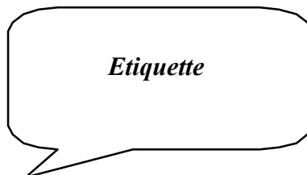
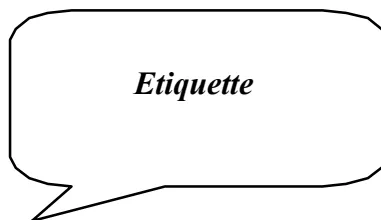

Coordonnateurs : Béatrice EON (Marseille)
Jean-Claude GRANRY (Angers)
Membres : Sadek BELOUCIF (Paris)
Christian CONSEILLER (Paris)
Marc DAHLET (Strasbourg)
Georges GOURSOT (Provins)
Laurent JOUFFROY (Strasbourg)
Alain LANDAIS (Argenteuil)
Michel LEVY (La Roche sur Yon)
Pierre MAURETTE (Bordeaux)
Le dossier d'anesthésie, élément essentiel de la continuité des soins en période périanesthésique et périinterventionnelle, a pour objectif de rassembler l'ensemble des informations concernant les périodes pré, per et post anesthésiques pour tout acte d'anesthésie délivré à un patient. Ces informations enregistrées dans leur totalité doivent pouvoir être facilement communiquées aux différents médecins intervenant à toutes les étapes de la prise en charge périanesthésique et périinterventionnelle.
Un dossier individuel global d'anesthésie est une nécessité pour un établissement donné. Il est spécifique, facilement identifiable et est inclus dans le dossier du patient dont il partage la sauvegarde et le statut confidentiel.
La méthodologie utilisée a consisté en l'étude des différentes étapes de la prise en charge anesthésique du patient.
A chaque étape, les obligations et recommandations sont rappelées, les principaux éléments constitutifs du dossier sont décrits et des exemples de documents sont fournis.
Il a paru également important au groupe d'individualiser un chapitre concernant le dossier anesthésique informatisé, d'envisager les problèmes rencontrés par l'assemblage des différents documents et leur archivage.
Des critères précis d'évaluation de la qualité du dossier sont également proposés, adaptés aux exemples fournis.
Enfin, soulignons que les documents décrits dans ce travail sont applicables à la grande majorité des pratiques anesthésiques mais ne peuvent entrer dans les détails inhérents à certaines spécialités. Surtout, ce document n'est pas opposable ; il s'agit d'un outil d'aide à la constitution du dossier d'anesthésie et non d'une norme. Les suggestions de tous en feront, nous l'espérons, un travail évolutif.
[Art. R. 710-2-2 du Code de la Santé Publique (Décr. n° 2002-637 du 29 avril 2002, art. 9)]
Un dossier médical est constitué pour chaque patient hospitalisé dans un établissement de santé public ou privé.
Ce dossier contient au moins les éléments suivants, ainsi classés :
14 - Le dossier de soins infirmiers ou, à défaut, les informations relatives aux soins infirmiers.
15 - Les informations relatives aux soins dispensés par les autres professionnels de santé.
16 - Les correspondances échangées entre professionnels de santé.
Elles comportent notamment :
1 - Le compte rendu d'hospitalisation et la lettre rédigée à l'occasion de la sortie.
2 - La prescription de sortie et les doubles d'ordonnance de sortie.
3 - Les modalités de sortie (domicile, autres structures).
4 - La fiche de liaison infirmière.
1.2.3. Informations mentionnant qu'elles ont été recueillies auprès de tiers n'intervenant pas dans la prise en charge thérapeutique ou concernant de tels tiers.
Sont seules communicables les informations énumérées aux 1.2.1. et 1.2.2.
[Art. R. 710-2-3 du Code de la Santé Publique (Décr. n° 2002-637 du 29 avril 2002, art. 9)]
Le dossier comporte l'identification du patient ainsi que, le cas échéant, celle de la personne de confiance définie à l'article L. 1111-6 et celle de la personne à prévenir.
Chaque pièce du dossier est datée et comporte l'identité du patient (nom, prénom, date de naissance ou numéro d'identification) ainsi que l'identité du professionnel de santé qui a recueilli ou produit les informations. Les prescriptions médicales sont datées avec indication de l'heure et signées ; le nom du médecin signataire est mentionné en caractères lisibles.
[Art. R. 710-2-1 du Code de la Santé Publique (Décr. n° 2002-637 du 29 avril 2002, art. 1 à 9)]
L'accès au dossier médical peut être demandé par la personne concernée, son ayant droit en cas de décès, la personne ayant l'autorité parentale pour un mineur, le tuteur ou encore un médecin désigné comme intermédiaire.
La réponse doit intervenir dans un délai de huit jours, ou de deux mois quand les informations remontent à plus de cinq ans.
Le demandeur peut consulter les documents sur place et en obtenir des copie ou les recevoir par courrier.
Le dossier anesthésique ne fait actuellement l'objet d'aucun référentiel spécifique. Seule la référence Dossier Patient (DPA) 5d mentionne directement le dossier d'anesthésie :
« le dossier du patient comporte, lorsque sa prise en charge l'exige, des éléments d'information spécialisés ».
Les éléments d'information spécialisés sont notamment :
Chaque établissement a élaboré son propre dossier. L'accréditation nous invite à initier dans ce cadre une démarche d'assurance qualité :
- Loi n° 2002-303 du 4 mars 2002 relative aux droits des malades et à la qualité du système de santé et ses principaux articles : Art. L. 1110-4 (respect de la vie privée et du secret des informations) ; Art. L. 1111-4 (respect de la volonté de la personne) ; Art. L. 1111-5 (consentement et personne mineure) ; Art. L. 1111-6 (personne de confiance) ; Art. L. 1111-7 (droits d'accès) ; Art. L. 1111-8 (hébergement des données) ; Art. L. 1112-1 (obligation de communication des informations médicales dans les établissements de santé).
- Décret n° 2002-637 du 29 avril 2002 relatif à l'accès aux informations personnelles détenues par les professionnels et les établissements de santé (en application des articles L. 1111-7 et L. 1112-1 du Code de la Santé Publique).
- Décret n° 95-1000 du 6 septembre 1995 portant code de déontologie médicale : article 45 et article 46
- Loi n° 79-18 du 3 janvier 1979 sur les archives
- Falcon D, François P, Jacquot C, Payen JF.
Evaluation de la qualité de remplissage du dossier d'anesthésie.
SFAR 1997. Abstract R066.
Cette période, qui s'étend de la consultation chirurgicale à la consultation pré anesthésique, n'est régie a priori par aucune obligation ni recommandation. Elle peut être utilisée pour faciliter la consultation pré anesthésique par l'intermédiaire de trois éléments :
Un avis médical spécialisé demandé par un praticien fait toujours l'objet, en dehors de l'urgence, d'une demande écrite et circonstanciée de la part de ce dernier. L'anesthésie échappe actuellement à cette règle. Il serait certainement souhaitable que, lorsqu'un opérateur décide d'une intervention nécessitant le concours d'un médecin anesthésiste-réanimateur, il exprime formellement sa demande comprenant en particulier :
Deux exemples de ce type de demande sont joints en annexe.
Un certain nombre d'équipes anesthésiques font remettre aux patients lors de la consultation chirurgicale un questionnaire pré anesthésique, précisant en particulier :
Il est demandé au patient ou à son entourage de remplir ce questionnaire, avec l'aide éventuelle du médecin traitant. Le document est remis au médecin anesthésiste réanimateur lors de la consultation pré anesthésique.
Les avantages de ce questionnaire sont certains :
mais les inconvénients ne sont pas négligeables :
Il s'agit donc d'un outil intéressant mais qui ne peut se substituer à l'interrogatoire effectué par le médecin.
Deux exemples de questionnaires sont joints en annexe.
De la même façon que pour le questionnaire pré anesthésique des informations écrites concernant l'anesthésie et la transfusion peuvent être remises au patient avant la consultation pré anesthésique.
Cette méthode permet le plus souvent au patient de lire attentivement les informations et, si besoin, de demander des précisions complémentaires au médecin anesthésiste réanimateur lors de la consultation. L'expérience montre que les patients posent aussi des questions concernant l'acte interventionnel. Il appartient à l'opérateur d'expliquer au patient ou de lui remettre également une information concernant l'intervention prévue.
Les recommandations et modèles rédactionnels de la SFAR concernant l'information aux patients avant l'anesthésie (adulte, pédiatrique ou obstétricale), la transfusion sanguine et la douleur post interventionnelle peuvent être consultées sur le site Internet de la SFAR.
Information au Patient : http://www.sfar.org/informationpatient.html
Fiche d'information sur l'anesthésie : http://www.sfar.org/ficheinfoanesth.html
Recommandations ambulatoires : http://www.sfar.org/recomambul.html
Information prétransfusionnelle : http://www.sfar.org/infopretrans.html
Information sur l'analgésie : http://www.sfar.org/infodouleur.html
Recommandations sur l'anesthésie pédiatrique : http://www.sfar.org/recomanpediatrie.html
Analgésie obstétricale : http://www.sfar.org/recomobst.html
Premières étapes de la prise en charge d'un patient par les médecins anesthésistes réanimateurs, elles ont pour objectif de regrouper toutes les informations pertinentes afin d'assurer la sécurité du patient. Pour cela, les informations recueillies doivent permettre d'évaluer le risque anesthésique, de préparer le patient à l'intervention, de proposer la meilleure stratégie per et post anesthésiques.
Les intervenants anesthésistes réanimateurs pouvant être différents en pré per et post anesthésie, il importe que chacun d'entre eux recueille, regroupe, valide et rende facilement accessible en permanence l'ensemble des informations nécessaires dans un document qui se veut être un véritable outil de communication.
L'importance du dossier du patient conduit à la rédaction de documents permettant de retrouver la trace écrite des informations de type réglementaire et celles préconisées par les recommandations professionnelles.
Un exemple de dossier standardisé de consultation et visite est proposé dans lequel sont regroupées les informations minimales à recueillir. Nombre de chapitres peuvent être développés en fonction des antécédents du patient ou du type de chirurgie et peuvent ainsi faire l'objet d'un développement spécifique, annexé au dossier comme par exemple l'interrogatoire et la préparation du patient allergique. Le dossier de consultation et de visite est donc évolutif.
La mention du recueil du consentement du patient se veut une incitation à établir un vrai dialogue avec le patient et participe à la préparation du patient.
Le dossier médical contient le dossier d'anesthésie
Décret n° 2002-637 du 29 avril 2002 relatif à l'accès aux informations personnelles détenues par les professionnels et les établissements de santé en application des articles L. 1111-7 et L. 1112-1 du Code de la Santé Publique.
(http://www.adminet.com/jo/20020430/MESP0221143D.html ou http://www.legifrance.gouv.fr/citoyen/jorf_nor.ow?numjo=MESP0221143D )
Décret 94-1050 du 5 décembre 1994 relatif aux conditions techniques de fonctionnement des établissements de santé en ce qui concerne la pratique de l'anesthésie et modifiant le Code de la Santé Publique.
- Recommandations de la SFAR concernant la période préanesthésique servant à définir les bonnes pratiques (septembre 1994)
3.2. Le document suivant rassemble les différents items concernant ce chapitre qu'il paraît important de mentionner au sein du dossier anesthésique.
Nom patronymique : .....
Prénom : .....
Nom d'épouse : .....
Date de naissance : .....
Sexe : .....

|
Médecin anesthésiste réanimateur consultant : : ..... |
Date de la consultation / / |
| Lieu consultation bloc unité hospitalisation | |
|
Nom de l'opérateur : : ..... |
Date prévue de l'intervention / / |
|
Type d'intervention (pathologie causale) Technique chirurgicale prévue Côté : : ..... |
Position : DD DV DL GP Assise Table orthopédique |
| Circonstances de l'anesthésie | Programmé | Non programmé |
| Estomac plein | Garde | Urgence |
| Ambulatoire | ||
| Antécédents Médicaux | Antécédents Chirurgicaux |
|---|---|
Facteurs favorisant une anaphylaxie peranesthésique
Allergie avérée à médicament ou produit susceptible d'être administré pour l'anesthésie (bilan allergologique)
Manifestations cliniques d'allergie lors d'une anesthésie précédente
Allergie au latex
Enfant muliopéré (spina bifida, myéloméningocèle)
Allergie alimentaire : Kiwi, banane, châtaigne, sarrasin
Décision : bilan allergologique préanesthésique oui non
- Mode vie : tabagisme, alcoolisme, toxicomanie,
.....
- Traitement en cours :
.....
.....
Evaluation des conditions d'intubation
Mallampati
Classe 1 Classe 2 Classe 3 Classe 4
Ouverture de bouche q < 20 mm (IOT impossible)
q < 35 mm
q > 35 mm
Distance thyromentonnière q < 65 mm
q > 65 mm
Etat buccodentaire
Conclusion / décision :
|
- Poids kgs - Fréquence cardiaque | bat/mn - Abord vasculaire ..... |
- Taille cm - Pression artérielle / mmHg - Risque thrombo embolique : Faible / Modéré / Elevé. .... |
- Statut physique ASA : I II
III
IV
V
Prescriptions Médicales
- Consignes de jeûne .....
.....
- Prémédications .....
.....
- Conduite à tenir par rapport au traitement préopératoire (IEC, antiagrégant, AVK,...) .....
.....
.....
Date et signature : .....
- Demande d'examens complémentaires .....
.....
- Résultats des examens complémentaires .....
.....
Vu le ..... par le Dr .....
|
- Demande de consultations spécialisées ..... ..... ..... - Résultats de consultations spécialisées ..... ..... ..... |
Vu le ..... par le Dr ..... |
| - Informations délivrées au patient | Orale | Doc SFAR | Autres Doc |
|---|---|---|---|
| Anesthésie en général | q | q | q |
| Anesthésie : protocole proposé pour l'acte prévu | q | q | q |
| Transfusion sanguine - stratégie transfusionnelle proposée | q | q | q |
| Analgésie | q | q | q |
| Intervenants multiples, Cs délocalisées, A. itératives | q | q | q |
-Questions formulées par le patient :
Recueil du consentement éclairé :
Nom de la personne désignée par le patient devant être tenue informée de son état de santé en cas d'hospitalisation post opératoire en réanimation :
VISITE PREANESTHESIQUE
|
Médecin anesthésiste réanimateur: ..... Rappel des consignes pré anesthésiques (jeûne, prémedication, traitement pré interventionnel) |
Date de la visite |
|
- Synthèse des données de la consultation - Evaluation du risque ..... ..... ..... |
|
- Type d'anesthésie prévue ..... ..... ..... |
| - Modifications du protocole d'anesthésie proposée à la consultation |
|
- Le patient en a été tenu informé ..... ..... ..... |
3.3. Des documents complémentaires spécifiques peuvent être ajoutés, comme par exemple : questionnaires et dossiers préanesthésiques SFAR pour la prévention du risque allergique.
Le dossier d'anesthésie doit comporter les mentions relatives à :
Ces trois éléments s'ajoutent aux informations transmises à l'équipe d'anesthésie : compte rendu de la consultation, signalement de tout risque particulier, éventuels résultats d'examens complémentaires et de consultations spécialisées et mention de l'information donnée au patient sur l'anesthésie.
En cas de consultation délocalisée, la visite préanesthésique doit être particulièrement bien renseignée : mention de la prise de connaissance du dossier de consultation, de la vérification des informations reçues, compléments d'information, confirmation du consentement.
Une trace écrite de la décision prise par l'équipe d'anesthésie doit alors figurer dans le dossier, de même que l'accord du patient et des différents intervenants.
La visite préanesthésique doit mentionner l'absence de modification pathologique ou thérapeutique depuis la dernière consultation ou à l'inverse les éléments conduisant au report de l'intervention.
Réalisation d'une anesthésie générale chez une mineure sans autorisation parentale.
Le dossier d'anesthésie doit permettre de s'assurer que le médecin anesthésiste réanimateur :
Stérilisation à visée contraceptive : la date de la première consultation d'anesthésie doit être retrouvée dans le dossier d'anesthésie. Le dossier d'anesthésie doit être complété par une deuxième consultation dans les jours précédents l'intervention.
-
La survenue d'une complication secondaire à l'acte anesthésique est de plus en plus mal acceptée, surtout pour les patients considérés a priori à risque faible. La survenue d'un accident est souvent perçue comme un événement résultant d'une défaillance technique, d'une erreur de jugement ou d'un trouble de la vigilance. Le dossier d'anesthésie doit donc faire la preuve que tout a été mis en place pour assurer la sécurité du patient à travers une surveillance rigoureuse et un protocole d'anesthésie précis. La réglementation et les recommandations de la SFAR notamment dictent les exigences en matière de recueil des informations per anesthésiques.
- Décret 94-1050 du 5 décembre 1994 relatif aux conditions techniques de fonctionnement des établissements de santé en ce qui concerne la pratique de l'anesthésie et modifiant le Code de la Santé Publique.
Les moyens nécessaires à la réalisation de l'anesthésie doivent permettre d'assurer :
Le protocole d'anesthésie ainsi que l'intégralité des informations recueillies lors de l'intervention et lors de la surveillance continue post interventionnelle sont transcrits dans un document classé au dossier médical du patient.
Il en est de même des consignes données au personnel qui accueille le patient en secteur d'hospitalisation. Elles font également l'objet d'une transmission écrite.
Tout acte d'anesthésie donne lieu à l'établissement d'une fiche d'anesthésie sur laquelle sont consignés les principaux éléments de l'examen préinterventionnel, la prémédication, les données de la surveillance peranesthésique, les temps opératoires, les médicaments et les produits sanguins administrés, les gestes associés (accès vasculaires, intubation trachéale, réglages du ventilateur).
Pour l'anesthésie locorégionale sont notés la technique utilisée, le site de ponction, le type de matériel, les caractéristiques du bloc.
Les noms des personnes ayant assuré l'examen préinterventionnel, l'anesthésie et la surveillance du réveil sont aussi notés.
En cas d'accident ou d'incident, un rapport écrit est ajouté.
Le recueil des données de la période peranesthésique concerne la surveillance issue du monitoring et les prescriptions, les diagnostics d'incidents ou d'accidents, la trace de l'analyse des risques réalisée avant la prise d'une décision importante.
- L'article 4 de l'arrêté du 3 octobre 1995 relatif aux modalités d'utilisation et de contrôle des matériels et dispositifs médicaux utilisés en anesthésie fait obligation de vérifier leur état et leur fonctionnement avant le début de chaque programme interventionnel et de chaque anesthésie (si une partie du matériel est changé ou si une autre équipe anesthésique prend le relais).
Cette procédure de vérification doit faire l'objet d'une trace écrite, contresignée par le médecin anesthésiste réanimateur. Cette transmission des informations est indispensable pour les utilisateurs suivants et les techniciens assurant l'entretien.
Les recommandations de la SFAR « concernant l'appareil d'anesthésie et sa vérification avant utilisation » proposent une procédure type de vérification « pour les appareils ne disposant pas de checklist ou quand celle-ci ne porte pas sur des systèmes anesthésiques particuliers ».
4.2. Une liste indicative des principaux items à recueillir pendant cette période est rapportée dans les tableaux suivants.
Les items en caractères gras sont considérés comme indispensables.
Nom patronymique : .....
Prénom : .....
Nom d'épouse : .....
Date de naissance : .....
Sexe : .....
Etiquette
Date de l'intervention : [ ][ ] [ ][ ] [ ][ ] [ ][ ] Site (bloc opératoire) :
| Nature de l'intervention : | Salle d'intervention : |
| Nom du médecin anesthésiste réanimateur : ..... | Circonstances de l'anesthésie Programmé Non programmé |
| Nom du de l'IADE : ..... | Urgence |
| Nom de l'opérateur : ..... | Estomac plein |
| Garde | |
| Ambulatoire |
Mineur : autorisation d'opérer
Electrocardioscope
Pression artérielle
SpO2
PetCO2
Débit d'oxygène
Teneur en oxygène du mélange gazeux inhalé
Pression ventilatoire
Débit ventilatoire
Hémodynamique :
Curarisation
Température
Autre (BIS,....)
Sonde intubation / masque laryngé /
COPPA N° [ ][ ][ ][ ]
Fibroscope
Intubation sélective
Voies veineuses (type et site)
cathéter central : .....
cathéter périphérique : .....
Cathéter artériel (site) : .....
Sondage estomac
vessie
Lutte contre l'hypothermie : .....
C.E.C.
Position : DD DV DL GP
Assise Table orthopédique
Trendelenburg (degré d'inclinaison de la table) : .....
| TECHNIQUE ANESTHESIQUE | |||
|---|---|---|---|
| - AG | : q | - Sédation | : q |
| - Péricurale | : q | Site de ponction : | ..... |
| - Rachianesthésie | : q | Site de ponction : | ..... |
| - ALR IV | : q | Site de ponction : | ..... |
| - Caudale | : q | Site de ponction : | ..... |
| - Bloc périphérique | : q | Site de ponction : | ..... |
| - Autre ALR | : q | Site de ponction : | ..... |
| Autre : ..... | |||
| - Surveillance | : q | ||
| Matériel Utilisé : | ..... | ||
| Matériel Utilisé : | ..... | ||
| Matériel Utilisé : | ..... | ||
| Matériel Utilisé : | ..... | ||
| Matériel Utilisé : | ..... | ||
| Heure d'entrée en salle | ___ H ___ mm | Heure fin d'intervention | ___ H ___ mm |
| Heure d'induction | ___ H ___ mm | Heure d'extubation | ___ H ___ mm |
| Heure début d'intervention (incision) | ___ H ___ mm | Heure sortie de salle | ___ H ___ mm |
| ou heure d'accouchement|___ H ___ mm | |||
| Principaux temps opératoires | |||
| - Clampage début | ___ H ___ mm | - Clampage fin | |
| - Garrot début|___ H ___ mm | - Garrot fin | ||
| ___ H ___ mm | |||
| - Changement de position | ___ H ___ mm | ||
| Installat ° en salle |
Induct° | Per opératoire | Sortie | ||||||||||
|---|---|---|---|---|---|---|---|---|---|---|---|---|---|
| Heure | |||||||||||||
| Fréquence Cardiaque | |||||||||||||
| Pression artérielle | |||||||||||||
| SpO2 (air ambiant - ou autres à préciser) | |||||||||||||
| Curarisation | |||||||||||||
| PetCO2 | |||||||||||||
| Température | |||||||||||||
| Diurèse | |||||||||||||
| Décurarisation avant extubation |
Données imprimées du recueil automatisé des paramètres de surveillance per anesthésique agrafées au dossier
q
PROTOCOLE ANESTHESIQUE
| Agents | Nature | Dose Induction | Dose entretien |
|---|---|---|---|
| - Hypnotique | |||
| - Halogéné | |||
| - Curare | |||
| - Morphinique | |||
| - Autres |
| Nature | Quantité ou dose administrée | |
|---|---|---|
| Solutés de perfusion | ||
| Solutés d'expansion volémique | ||
| Produits sanguins |
- CGR - PFC - CPS / CPA - Autres : |
|
| Antibioprophylaxie |
| Techniques transfusionnelles | |||
| - Homologue | q | - TAP | q |
| - Récupération peropératoire | q | ||
| Modalités de la ventilation | |||
| - Paramètre du ventilateur : | ..... | ||
| - Oxygénéthérapie : | ..... | ||
| - Assistance manuelle | q | ||
| Orientation post interventionnelle | - SSPI | q | - réanimation | q | - unité d'hospitalisation | q |
| Recueil des incidents ou accidents : | ..... | |||||
| ..... | ||||||
| Absence d'incident | q | |||||
| Commentaires : | ..... | |||||
| ..... | ||||||
| ..... | ||||||
Le recueil automatisé des paramètres sur support papier est une fonctionnalité disponible (éventuellement en option) sur la plupart des appareils de monitoring du marché. Cette solution technique est fiable, peu coûteuse et intéressante ; elle peut constituer un choix judicieux pour amorcer une démarche qualité de la gestion de l'information en anesthésie mais ne peut en aucun cas être assimilée à une feuille informatisée de surveillance en anesthésie.
La période du réveil correspond à la disparition progressive des effets résiduels des agents de l'anesthésie et l'apparition des conséquences de l'acte chirurgical. La surveillance post interventionnelle et post anesthésique immédiate est obligatoirement effectuée dans une structure dédiée à cette période et effectuée par un personnel qualifié. La qualité de cette surveillance clinique et instrumentale est un élément de la sécurité post anesthésique. Les éléments de cette surveillance font l'objet d'un recueil spécifique dans le dossier d'anesthésie. Les prescriptions post interventionnelles, de surveillance à distance de l'anesthésie et d'examens paracliniques, destinées au secteur d'accueil du patient à sa sortie de SSPI assurent la continuité des soins.
5.1. Le décret n° 94-1050 du 5 décembre 1994 décrit avec précision l'organisation et le fonctionnement de la surveillance continue post interventionnelle.
L'article D 712-50 de ce décret précise que l'intégralité des informations recueillies lors de la surveillance continue post interventionnelle est transcrite dans un document classé dans le dossier médical du patient.
Il en est de même « des consignes données au personnel qui accueille le patient dans le secteur d'hospitalisation » qui font également l'objet d'une transmission écrite.
5.2. Les principaux items de cette surveillance sont rassemblés dans le document ci-après.
SURVEILLANCE POST INTERVENTIONNELLE
Identification Patient
Nom patronymique : .....
Prénom : .....
Nom d'épouse : .....
Date de naissance : .....
Sexe : .....

| Date □□ □□ □□□□ | Identification SSPI : ..... |
| Nom du Médecin anesthésiste réanimateur : | Nom de l'IADE / IDE |
| ..... | ..... |
| Monitoring et surveillance en SSPI : | |
| Electrocardioscope q | Température q |
| Pression artérielle non invasive q | Diurèse horaire q |
| invasive q | Drainage type: ..... |
| SpO2 q | quantité: ..... |
| PetCO2 q | Site opératoire : ..... |
| Curarisation q | |
| Ventilation FiO2 : □□ % Pression ventilatoire : ..... Débit ventilatoire : ..... | |
| Entrée | Surveillance régulière | Sortie | ||||||||
|---|---|---|---|---|---|---|---|---|---|---|
| Heure | ||||||||||
| Fréquence cardiaque | ||||||||||
| Pression artérielle | ||||||||||
| Conscience | ||||||||||
| SpO2 | ||||||||||
| PetCO2 | ||||||||||
| Température | ||||||||||
| Diurèse | ||||||||||
| Douleur : EVA, EN, EVS | ||||||||||
| - Intervention thérapeutique : | ||
| ..... | Heure : □□ H □□ mm | Signature : ..... |
| ..... | Heure: □□ H □□ mm | Signature : ..... |
| ..... | Heure : □□ H □□ mm | Signature : ..... |
Technique Analgésique : .....
.....
.....
Destination post interventionnelle :
Prescriptions Médicales
Date et signature : .....
- Autorisation de sortie de SSPI
Date : [ ][ ] [ ][ ] [ ][ ] [ ][ ] Heure : [ ][ ] H [ ][ ] mm
Nom du Médecin Anesthésiste Réanimateur : ..... Signature : .....
- Références SFAR à consulter
Ce chapitre aborde le rôle du médecin anesthésiste-réanimateur dans les suites opératoires et lors de la sortie du patient. Les modalités de transfert de la salle de surveillance post-interventionnelle vers les secteurs d'hospitalisation sont aussi détaillées.
Les dispositions réglementaires ne précisent pas le rôle du MAR au sein des services chirurgicaux ou des secteurs interventionnels (endoscopie, radiologie).
(Ordre National des Médecins - 2001)
Lorsque l'opéré retourne en secteur d'hospitalisation, il séjourne dans un service sous la responsabilité d'un chirurgien. Celui-ci est responsable des suites opératoires, mais le règlement interne de l'établissement ou du service doit préciser les procédures à suivre en cas d'événement inopiné ou de complication tardive.
Anesthésistes-réanimateurs et chirurgiens interviennent chacun dans leur domaine de compétence mais, en situation d'urgence, la diligence exclut qu'un médecin se retranche derrière sa spécialité pour s'exonérer de sa mission d'assistance en cas de complication post-interventionnelle quelle qu'en soit la nature.
Ce chapitre fait donc implicitement référence
Le transfert des patients de la SSPI vers le service d'accueil doit être adapté à l'état du patient :
Les dispositions réglementaires ou légales sur le rôle du médecin anesthésiste réanimateur, dans les suites interventionnelles, au sein des services de soins se font dans le cadre d'une action coordonnée des différents praticiens impliqués dans la prise en charge du patient. Elle doit faire l'objet d'une concertation entre les médecins intervenant au sein d'une même unité fonctionnelle.
Ce consensus sera formalisé par un document écrit et cosigné fixant les règles de fonctionnement, lesquelles précisent clairement :
Il est souhaitable que ces documents soient validés par les instances de l'établissement. (CME ou CCM)
Dans tous les cas, il est évident que chaque fois qu'un médecin anesthésiste réanimateur est appelé au chevet d'un patient lors de la période postinterventionnelle, il laissera un compte-rendu écrit de son intervention ; la transmission infirmière ne peut pas le remplacer.
Enfin, la ou les visites postinterventionnelles sont l'occasion d'informer le patient des événements notables survenus pendant la période périinterventionnelle (transfusion sanguine, événements indésirables, etc...).
6.4. Principaux items du suivi postinterventionnel :
SOINS POST-OPERATOIRES EN SERVICE D'HOSPITALISATION CONVENTIONNELLE
Identification Patient
Nom patronymique : .....
Prénom : .....
Nom d'épouse : .....
Date de naissance : .....
Sexe : .....
| Date | Identification U.F.: ..... |
| Nom du Médecin anesthésiste réanimateur : | Nom du Chirurgien responsable/hospitalisant : |
Motif d'intervention du Médecin anesthésiste-
|
réanimateur!: : .....
|
SURVEILLANCE |
| Entrée | Surveillance régulière | Sortie | ||||||||
|---|---|---|---|---|---|---|---|---|---|---|
| date/heure | ||||||||||
| Surveillance clinique | ||||||||||
| Fréquence cardiaque | ||||||||||
| Pression artérielle | ||||||||||
| Conscience | ||||||||||
| SpO2 | ||||||||||
| Fréquence respiratoire | ||||||||||
| Température | ||||||||||
| Diurèse | ||||||||||
| poids | ||||||||||
| transit | ||||||||||
| Douleur : EVA, EN, EVS | ||||||||||
| Surveillance biologique | ||||||||||
| Examens complémentaires | ||||||||||
OBSERVATION CLINIQUE
date, nom et signature : .....
PRESCRIPTIONS MÉDICALES
| produits | posologies | voie d'administration |
horaires | surveillance | |
|---|---|---|---|---|---|
| Thérapeutiques médicamenteuses : | |||||
| perfusions | |||||
| transfusions | |||||
| douleur | |||||
| N.V.P.O. | |||||
| Prophylaxies : | |||||
| antibioprophylaxie | |||||
| thromboprophylaxie | |||||
| ulcère de stress | |||||
| Actes techniques : | |||||
| cathéters périphériques | |||||
| cathéters centraux | |||||
| oxygénation | débit : | durée : | |||
| sonde nasogastrique | |||||
| sonde urinaire | |||||
AUTORISATION DE SORTIE APRÈS ANESTHÉSIE AMBULATOIRE
- consignes écrites : q
- ordonnance établie : q
- bulletin de sortie : q
Date : |__|__| |__|__| |__|__|__| Heure : |__|__| h |__|__| mm
Nom du Médecin anesthésiste-réanimateur : ..... Signature : .....
Le compte rendu anesthésique n'est pas explicitement cité dans les textes officiels (art R 710-2-2 du code de la Santé Publique) parmi les documents établis au moment de l'admission et durant le séjour.
En pratique, et selon les moyens de l'établissement ou de la structure, il ne peut être possible de réaliser un compte rendu pour chaque patient. Il apparaît cependant nécessaire de le faire lors de tout incident ou accident per ou post interventionnel ainsi qu'à la demande du patient et/ou de son médecin traitant.
Au sein du référentiel ANAES Dossier du Patient (DPA), la référence 5 précise que le contenu du dossier du patient permet d'assurer la coordination de la prise en charge entre professionnels et entre secteurs d'activité. Le critère 5g évoque un document écrit permettant la continuité de la prise en charge.
Il importe de distinguer le compte rendu anesthésique des patients pris en charge dans le cadre d'une structure ambulatoire. Le décret n° 92-1102 du 2 octobre 1992
(http://www.legifrance.gouv.fr/citoyen/pagetail.ow?heure2=180310335961&rang=1)
relatif aux conditions techniques de fonctionnement auxquelles doivent satisfaire les structures de soins alternatives à l'hospitalisation mentionnées à l'article L. 712-2 du code de la santé publique en application de l'article L. 712-9 (3o) de ce même code énonce que « chaque patient reçoit un bulletin de sortie avant son départ de la structure. Ce bulletin, signé par l'un des médecins de la structure, mentionne l'identité des personnels médicaux ayant participé à l'intervention, les recommandations sur les conduites à tenir en matière de surveillance postinterventionnelle ou anesthésique et les coordonnées de l'établissement de santé assurant la permanence et la continuité des soins ».
pourrait comprendre :
Lorsque le patient a bénéficié de soins postinterventionnels prolongés par l'équipe d'anesthésie réanimation, le compte-rendu est joint.
Il pourrait être le même que celui des autres documents établis à la fin de chaque séjour hospitalier, c'est à dire « adressé au praticien que le patient ou son représentant légal aura désigné afin d'assurer la continuité des soins ». Il est également « établi des doubles de ces mêmes documents qui demeurent dans le dossier du patient ».
Dans le cadre de l'anesthésie ambulatoire, un document doit être remis au patient lors de sa sortie (Art. D. 712-33 du Décr. n° 92-1102 du 2 octobre 1992).
L'archivage informatique de ce document apparaît aujourd'hui indispensable.
Un document personnalisé (« carte d'anesthésie ») peut également être remis au patient, notifiant en particulier les éventuels problèmes rencontrés et pouvant être source d'incidents ou d'accidents lors d'anesthésies ultérieures (réactions allergiques, intubation difficile etc...).
Le dossier d'anesthésie informatisé s'articule autour de 2 piliers principaux qui doivent fonctionner en réseau pour être complémentaires :
Elle représente l'étape la plus difficile, en raison d'une double contrainte :
Se doit d'être souple, performante, intuitive, adaptée à nos contraintes professionnelles.
- en salle d'opération: la présentation doit être claire, synthétique, personnalisable, hiérarchisée de manière structurée ; la visualisation doit permettre une analyse d'ensemble, toutes les associations paramétriques étant possibles.
- au secrétariat : les informations recueillies sur le serveur doivent être structurées de manière à permettre un accès facile suivant des clefs de recherche. Elles doivent être disponibles sous des formats permettant leur manipulation et leur exploitation par d'autres logiciels utilisés dans les domaines graphiques, statistique ou de gestion et pouvant tourner sous d'autres systèmes d'exploitation.
Cette extraction de données est essentielle aux fins d'évaluation et de suivi. Cette ouverture doit permettre un traitement simple et souple de l'information, sans le recours à un informaticien.
Se doit de respecter quelques principes ergonomiques :
Dans tous les cas, le dossier anesthésique informatisé ne peut correspondre à la disparition du dossier papier.
En perinterventionnel, le dossier préinterventionnel doit pouvoir être :
En perinterventionnel, aucune donnée saisie à la consultation ne doit pouvoir être effacée.
réal. (ventilateur, moniteur, pousse seringue...). Le Médecin Anesthésiste Réanimateur (MAR) doit avoir la possibilité à tout instant d'afficher l'ensemble des paramètres qui lui semble les plus pertinents.
La sauvegarde des données est le corollaire de toute acquisition informatique d'une information.
C'est un processus indissociable du stockage de données. L'extrême densité d'informations sur des supports mécaniques expose ceux-ci à des erreurs, des anomalies d'écriture, ou simplement des pannes malgré l'extrême robustesse de ces matériels. En l'absence de sauvegarde, c'est toute la mémoire du système qui est susceptible de disparaître d'une manière irréversible, effaçant en quelques secondes des milliers d'heures de travail.
La sauvegarde indépendamment des solutions logicielles et techniques est primordiale, indispensable et a pour objectif d'assurer la pérennité des données acquises.
La fréquence des sauvegardes doit être proportionnée à la nature et au nombre de données acquises.
Il est conseillé de réaliser une sauvegarde journalière ou bi-journalière et hebdomadaire.
L'archivage électronique est un secteur essentiel de la gestion électronique des documents.
L'information utile peut être dispersée sur plusieurs serveurs. Compte-tenu de la complexité des stratégies utilisées par les systèmes informatiques pour répertorier les objets qu'ils contrôlent, des outils de gestion documentaire doivent libérer l'utilisateur de cette complexité sous-jacente. Ce capital d'information doit pouvoir rapidement être retrouvé et partagé entre tous les intéressés attelés à la même tâche et ceci qu'elle que soit l'heure de la journée.
Chacun doit pouvoir retrouver l'ensemble des informations disponibles quelle qu'en soit la forme (texte, image, tableau de chiffres, graphiques, son...) et le lieu de stockage.
L'utilisateur doit se contenter de décrire l'information qu'il recherche. Il doit pouvoir désigner le document par son titre, le nom, prénom, date de naissance du patient, la nature de l'acte (chirurgical, endoscopique, ambulatoire...), la date de sa première intervention ou des éventuelles interventions successives. Lorsque le patient n'a aucun souvenir précis de son intervention ou de son hospitalisation, la recherche doit pouvoir être guidée par son contenu. Une telle recherche par le contenu ne peut s'exercer que sur des documents contenant une partie textuelle, directement accessible, car stockés dans les mémoires actives des ordinateurs connectés au réseau.
Le contrôle des droits d'accès doit s'exercer sur l'ensemble des documents patients du service d'anesthésie réanimation. Ces droits peuvent être définis en référence à des profils d'utilisateurs individuels ou de groupe. La restriction d'accès peut être totale ou partielle. Les modifications en fonction des droits d'accès sont autorisées ou non (autorisées sur le dossier pré interventionnel: actualisation des données antérieurement acquises mais interdites sur le per et le post interventionnel des interventions antérieures).
Quand un utilisateur accède à un document, l'archivage doit en garder la trace. La librairie d'archivage doit contrôler les numéros de version des documents et en gérant leur affectation à chaque instant doit garantir aux différents utilisateurs qu'ils travaillent toujours sur la version la plus récente. Cette librairie doit également permettre aux utilisateurs autorisés l'accès aux versions antérieures suivant des critères de recherche préalablement établis.
Le dossier d'anesthésie doit pouvoir décrire parfaitement l'activité anesthésique des périodes pré, per et post-interventionnelles tant d'un point de vue quantitatif que d'un point de vue qualitatif.
Dans le cadre d'une politique de gestion des risques, le recueil systématique des événements indésirables est conseillée. Ce recueil doit être standardisé afin d'alimenter une base de données.
L'exploitation de cette base de données permet
Par ailleurs en cas de complication anesthésique pouvant avoir des conséquences juridiques le dossier d'anesthésie doit contenir le relevé des faits. Le médecin anesthésiste réanimateur reporte les valeurs mesurées pendant la surveillance du patient, note les constatations faites et les démarches entreprises sur le dossier "plus qu'un enregistrement automatisé, ce qu'aura écrit le médecin en charge de la surveillance du patient sera le meilleur garant de l'attention qu'il aura porté à ces valeurs".
Les patients ont accès à ce type d'information
Comme le préconise le groupe de travail « Contentieux » de la SFAR : « Le dossier médical doit contenir : tous les faits, rien que les faits, et non des opinions, des commentaires ou des jugements personnels, en particulier sur l'activité des confrères. Les constatations doivent être impérativement et loyalement notées sur le dossier médical. Les valeurs mesurées doivent être reportées, ainsi que toutes les constatations faites et les actions entreprises. Lorsque l'urgence ne permet pas de le faire sur le moment, ces données sont reportées dès que possible. En cas de transfert vers un autre hôpital, il est prudent de photocopier le dossier. »
Différents items concernant la morbidité per et post interventionnelles sont rassemblés dans le tableau suivant :
| Morbidité per et post interventionnelles |
| Nature | A quel temps? | Conséquences ? |
|---|---|---|
| Induction Peranesthésique Réveil SSPI Post anesthésique |
décès reprise au bloc séjour prolongé en SSPI transfert non prévu en réanimation Séquelles |
NATURE
TEMPS
CONSEQUENCE
| Cardio vasculaire | |||
| Arrêt cardio circulatoire | |||
| Bradycardie nécessitant un traitement | |||
| Tachycardie nécessitant un traitement | |||
| Hypotension nécessitant un traitement | |||
| Hypertension nécessitant un traitement | |||
| Ischémie /nécrose myocardique | |||
| Troubles du rythme nécessitant un traitement | |||
| Choc hémorragique |
| Ventilation | |||
| Laryngospasme | |||
| Bronchospasme | |||
| Inhalation pulmonaire | |||
| Œdème pulmonaire | |||
| Pneumothorax | |||
| Hypercapnie >50 mmHg | |||
| Hypoxémie SpO2 < 90% | |||
| Dépression respiratoire nécessitant un traitement dont ventilation postinterventionnelle non prévue administration de naloxone |
| Loco régionale | |||
| Brèche dure mérienne | |||
| Echec | |||
| Extension de la rachianesthésie | |||
| Toxicité des AL |
| Divers | |||
| Manifestation anaphylactique bénigne | |||
| Choc anaphylactique | |||
| Curarisation prolongée | |||
| Erreur de produit/ de dose | |||
| Hyperthermie > 38°C | |||
| Hypothermie < 35°C | |||
| Hyperthermie maligne | |||
| Nausées, vomissements | |||
| Lésions tégmentaires | |||
| Neurologique | |||
| Atteinte du SNC | |||
| Agitation post interventionnelle nécessitant un traitement | |||
| Retard ou absence de réveil | |||
| Convulsions | |||
| Lésion(s) nerveuse(s) périphérique(s) | |||
| Lésion(s) oculaire(s) | |||
| AVC per ou post interventionnel |
| Incidents liés à l'intubation | |||
| Traumatisme dentaire | |||
| Intubation difficile non prévue | |||
| Intubation impossible | |||
| Intubation oesophagienne | |||
| Intubation sélective | |||
| Extubation accidentelle | |||
| Nécessité d'une réintubation | |||
| Œdème de la glotte | |||
| Obstruction des voies aériennes ou sonde |
| Défaillance du matériel | |||
| Ventilateur | |||
| Circuit d'anesthésie | |||
| Moniteur | |||
| autre |
Autre :
Commentaires :
L'incident ou accident constaté a donné lieu à un rapport écrit : oui non
Adressé au médecin traitant
Remis au patient
Référence :
Les démarches qualités en anesthésie : mode ou nécessité? F Clergue, P Garnerin. La qualité en anesthésie. JEPU 1997
Développement d'une démarche de gestion de la qualité et des risques en anesthésie : l'expérience du CHU de Rouen. J . Petit. La qualité en anesthésie. JEPU 1997
Conduite à tenir en cas de complication anesthésique pouvant avoir des conséquences juridiques. A Lienhart www.snarf.org/infos/infospratiques/lienhart.htm
L'anesthésiste-réanimateur et la justice : conseils de la SFAR, paragraphe 2.2. A. Lienhart, M. Gentili et le Groupe Contentieux. Juin 2002. http://www.sfar.org/arjusticefr.html
- L'arrêté du 11 mars 1968, portant règlement des archives hospitalières a pour objectif de privilégier la conservation des documents au sein de l'établissement de santé, sous la responsabilité du directeur de l'établissement.
Dans son article 18, cet arrêté précise que « le fonctionnaire chargé de la garde des archives a la faculté de procéder à l'élimination des papiers inutiles... et documents ne faisant pas l'objet d'une prescription de conservation... »
- le délai de conservation concernant les documents de la série R, correspondant aux Archives Médicales, est le suivant (extraits) :
Série R
(source : DIM CHU Angers)
| Registre d'entrées et sorties des malades | Indéfiniment | Arrêté interministériel du 11/03/1968 |
Dossiers médicaux des malades :
| Indéfiniment 70 ans 20 ans | Arrêté interministériel du 11/03/1968 |
| Documents du service social enquêtes | 70 ans Indéfiniment | Arrêté interministériel du 11/03/1968 |
| Dossiers et livres de laboratoires | 20 ans | Arrêté interministériel du |
| Dossiers des transfusions sanguines | (1) Cf ci-dessus durée de conservation des dossiers médicaux |
circulaire 97-149 du 26/02/1997 |
|
(1) Circulaire N° 47 du 15/01/1992 indique que le dossier de transfusion sanguine fait partie du dossier patient Circulaire 97-149 du 26/02/1997 :
Voir également : Directive technique N° du 14/06/1994 de l'agence française du sang |
||
Le dossier anesthésique comporte :
Ces éléments peuvent être rassemblés :
.../...
Dans les deux cas, ces documents sont intégralement conservés dans le dossier patient. Leur accessibilité doit être permanente.
Celui-ci peut être ou non centralisé.
Un seul numéro d'archivage est attribué pour l'ensemble des sous-dossiers d'un dossier patient. Les règles de fonctionnement de cet archivage centralisé sont précisées et diffusées aux différents services ou unités.
Deux grilles d'évaluation sont proposées :
La première permet d'évaluer l'organisation du service par rapport au dossier d'anesthésie en général (règles d'archivage, responsabilités, mise en place d'outils de transmission des informations)...
La seconde a pour but d'évaluer le contenu du dossier d'anesthésie dans le détail, prenant en compte l'ensemble du processus anesthésique. Un modèle de grille simplifiée peut être utilisé pour un évaluation plus rapide prenant en compte les critères majeurs retenus par le Comité Evaluation de la SFAR . Cette grille simplifiée a fait l'objet d'une évaluation (faisabilité) au cours de la visite d'audit "test" de deux services d'anesthésie effectuée au premier trimestre 2001.
La méthode d'évaluation du dossier d'anesthésie retenue est celle proposée par l'ANAES dans son guide « Evaluation de la tenue du dossier du malade. Service Evaluation Hospitalière, juin 1994 »).
La méthode retenue pour réaliser l'évaluation de la tenue du dossier d'anesthésie étant celle de l'audit clinique.
Méthode : Il s'agit d'une étude rétrospective.
Sur un minimum de trente dossiers de patients ayant bénéficié d'une prise en charge anesthésique au cours des trois derniers mois écoulés.
Sélection des dossiers par tirage au sort à partir de la liste des patients de la base de données du service d'anesthésie.
Utilisation d'une grille par dossier.
Numérotation des grilles définie au préalable selon le nombre de sites opératoires, dans le cas où les activités d'anesthésie ne sont pas centralisés et dans le but d'évaluer la variabilité des pratiques selon les sites ou les spécialités.
Répondre par oui ou par non exceptionnellement Non applicable (NA) (par exemple NA à mention du n° de la sonde d'intubation pour un patient non intubé).
Les données peuvent être saisies et traitées sur le logiciel « Epi Info » ou sur un tableur type Excel. Les résultats rendent compte du pourcentage d'exhaustivité de renseignements des différents items de la grille.
La présentation des résultats sous forme d'histogramme peut être faite en hiérarchisant les items: majeurs, réglementaires...
L'ensemble des résultats de l'évaluation doit être diffusé auprès de tous les médecins anesthésistes-réanimateurs.
Les points à améliorer sont à déterminer en commun et doivent donner lieu à la mise en place d'action d'amélioration également définies en commun.
L'évaluation doit être répétée afin de valider les actions d'amélioration par la mesure d'indicateurs.
A la démarche d'évaluation du dossier d'anesthésie, il faut associer les différents acteurs du processus périanesthésique et périopératoire contribuant à la gestion du dossier par l'apport d'information (chirurgiens, consultants spécialisés) par leur participation à l'acte anesthésique et au réveil (IADE) à la gestion documentaire et à l'organisation (secrétariat).
| Dossier d'anesthésie aspects organisationnels | |||
|---|---|---|---|
| Oui | Non | NA | |
| Il existe un dossier médical unique par patient incluant le dossier d'anesthésie | |||
| Sinon, il existe une procédure relative à l'archivage du dossier d'anesthésie | |||
| Si le dossier d'anesthésie fait l'objet d'un archivage séparé du reste du dossier patient, il est facilement accessible | |||
| La procédure relative à l'archivage est diffusée à l'ensemble des MAR du service | |||
| La procédure est connue de tous les MAR | |||
| Il existe un document standardisé élaboré par le service relatif à la partie préanesthésique | |||
| Il existe un document standardisé service élaboré par le relatif à la partie peranesthésique | |||
| Il existe un document standardisé élaboré par le service relatif à la partie postanesthésique | |||
| L'ensemble des documents relatifs à l'anesthésie (consultation, prescriptions, résultats d'examens etc....) sont regroupés dans un support unique | |||
| Il existe des documents facilitant la transmission de l'information et visant à assurer la continuité des soins | |||
| Entre MAR et personnel soignant de l'unité d'hospitalisation | |||
| Entre MAR et opérateur | |||
| Entre unité d'hospitalisation et bloc opératoire | |||
| Ente SSPI et unité | |||
| Entre bloc et réanimation | |||
| Entre la réanimation et le bloc | |||
| Il existe une évaluation régulière de la qualité des dossiers d'anesthésie | |||
| Si le dossier d'anesthésie donne lieu à une saisie informatique, le patient en est informé | |||
| Le dossier d'anesthésie comprend le codage PMSI des items de l'ICR bêta | |||
| Le dossier d'anesthésie comprend le codage PMSI du champ alpha du |
| CDAM | |||
| Le compte-rendu de la consultation d'anesthésie donne lieu à une synthèse évaluant le risque (ASA, NYHA ...) | |||
| Le compte rendu de la consultation d'anesthésie donne lieu à une synthèse proposant le protocole d'anesthésie | |||
| Il existe un recueil systématique des événements indésirables périanesthésiques | |||
| Ce recueil donne lieu à une évaluation de la qualité des soins | |||
| Le dossier d'anesthésie est transmis au service de réanimation en cas d'hospitalisation post opératoire en réanimation programmée ou non | |||
| Une procédure élaboré par le service définit le rôle des intervenants (s'ils sont multiples pour les différents temps: consultation, visite, per et post anesthésie) par rapport aux prescriptions pré et post anesthésiques, à la validation des examens préopératoires | |||
| Une procédure a été définie au sein du service concernant la délivrance de l'information au patient | |||
| Le dossier assure la traçabilité de cette information ( mention de la remise des documents écrits, recueil du consentement, mention des questions formulées par le patient) |
Référence Bloc ou plateau technique :
| Oui | Non | NA | |
|---|---|---|---|
| Présence du compte rendu écrit de la consultation (visite si urgence) de pré anesthésie | q | q |
Si oui, les données suivantes sont-elles disponibles ?
| Nom patronymique | q | q | |
| Prénom | q | q | |
| Nom d'épouse | q | q | q |
| Date de naissance | q | q | |
| Sexe | q | q | |
| Étiquette | q | q |
| Nom | q | q | |
| Type d'intervention (pathologie causale) | q | q | |
| Technique chirurgicale prévue | q | q | |
| Côté précisé | q | q | |
| Position précisée | q | q |
Précisions sur l'état du patient
| Oui | Non | NA | |
|---|---|---|---|
| Risque allergique mentionné | q | q | |
| Traitement en cours mentionné | q | q | |
| Difficultés d'intubation | q | q! | |
| Statut physique ASA | q | q | |
| Tension artérielle mesurée | q | q |
| Oui | Non | NA | |
|---|---|---|---|
| Demande d'examens complémentaires | q | q | q |
Si oui!:
| Résultats colligés sur le compte-rendu préanesthésique ou accessibles facilement | q | q |
VISITE PREANESTHESIQUE
| Date de la visite préanesthésique | q | q |
CARACTERISTIQUES DU DOSSIER
| Bon | Mauvais | |
|---|---|---|
| Etat du support matériel | q | q |
| Lisibilité générale | q | q |
| Présence de la feuille de surveillance per anesthésique | Oui | Non |
Si oui, les données suivantes sont-elles disponibles ?
| Oui | Non | NA | |
|---|---|---|---|
| Nom patronymique | |||
| Prénom | |||
| Nom d'épouse | |||
| Date de naissance | |||
| Sexe | |||
| Etiquette |
| Nom |
| Nom |
| Date de l'intervention | ||
| Oui | Non | NA | |
|---|---|---|---|
| Monitorage exigé par le décret 94-1050 |
Electrocardioscope, PA, SpO2, PetCO2, débit d'oxygène et teneur en oxygène du mélange gazeux inhalé, pressions et débits ventilatoires
L'équipement du patient est précisé!:
| n° de la sonde d'intubation ou du masque laryngé ou COPPA |
| TECHNIQUE anesthésique PRECISEE | |||
| (AG, Péricurale, Rachianesthésie, ALR IV, Caudale, Bloc périphérique, Autre ALR, Sédation, Surveillance) | |||
| Oui | Non | NA | |
|---|---|---|---|
| PA | |||
| FC | |||
| SpO2 |
| PA | |||
| FC | |||
| SpO2 | |||
| Pet CO2 | |||
| Curarisation |
| Heure de début d'intervention (incision) |
CARACTERISTIQUES DU DOCUMENT
| Bon | Mauvais | |
|---|---|---|
| Etat du support matériel | q | q |
| Lisibilité générale | q | q |
SURVEILLANCE POST INTERVENTIONNELLE
| Oui | Non | |
|---|---|---|
| Surveillance régulière en SSPI | q | q |
| Evaluation de la douleur (EVA, EN, EVS) | q | q |
| Autorisation de sortie de SSPI horodatée et signée par le MAR responsable de la SSPI | q | q |
CARACTERISTIQUES DU DOCUMENT
| Bon | Mauvais | |
|---|---|---|
| Etat du support matériel | q | q |
| Lisibilité générale | q | q |
Le dossier anesthésique fait partie intégrante du dossier patient, élément clef du processus de soins. Ce dossier est le véritable fil conducteur de la prise en charge anesthésique qui, à chaque étape, génère, utilise et transmet les informations relatives au patient.
Le document de travail proposé est un outil et un guide mettant en valeur la nécessité de la qualité des documents et de leur archivage. Il souligne aussi la valeur pédagogique d'une démarche d'amélioration de la qualité.
Les principes qui structurent cet outil fixent des objectifs plutôt que des normes à atteindre. La tenue du dossier anesthésique varie selon les structures et les organisations. Ces différences sont légitimes ; elles témoignent des modes de fonctionnement des équipes d'anesthésistes-réanimateurs visant à optimiser la prise en charge du patient.
Le groupe de travail remercie l'ensemble des équipes ayant fourni les documents proposés en exemple dans les Annexes.